Everything here is built from the same geometry as the symbol: 60° bars, heights rising 2 : 3 : 4, one stroke weight and the lever. Every file is a clean vector, generated from one script, so a change to the mark flows through the whole kit.
Strokes are converted to filled shapes and the name is converted to outlines, so the files render the same in any tool, printer or browser without fonts installed.
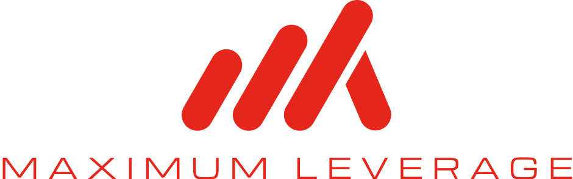
Stacked · Signal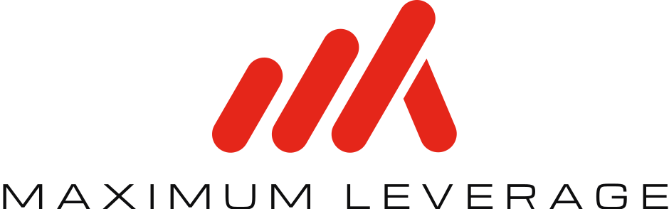
Stacked · Signal and CarbonOne bar width on every side, about 15% of the symbol's width. Nothing enters it: no text, no edges, no patterns.
The symbol holds down to 16px wide. Below 120px wide, drop the name and use the symbol alone. The stacked lockup needs at least 90px of width for the name to stay readable.
Signal symbol on a full Carbon square. iPhone and Android round the corners themselves. The maskable version keeps the symbol inside the circular safe zone.
1000 × 1000, safe for circle crops. Carbon is the default. Use Signal where the feed is busy.
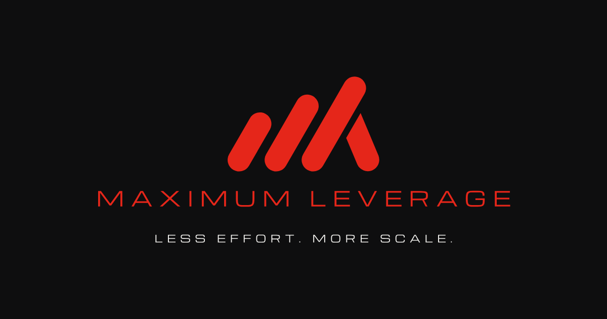
1200 × 630, shown when the website is shared in chats and on social.
No scattered motifs. Each pattern is built by a rule that only this mark has, so nobody else could own it.
The rule: the whole mark, repeated edge to edge on one baseline, one bar width apart, rising out of the bottom edge. The peaks run on like a skyline that keeps growing.
Footer bands on slides and pages, borders on print and packaging, the bottom edge of social posts and video frames. Full strength as a border, tonal behind content.
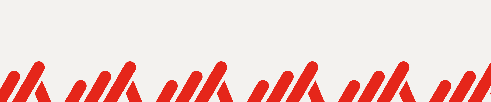
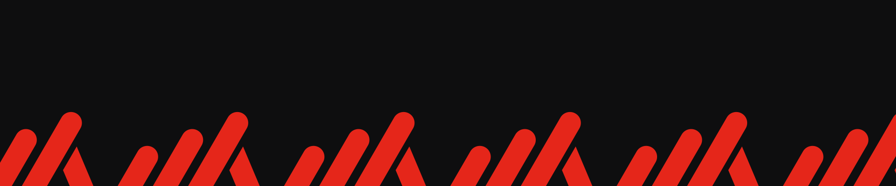
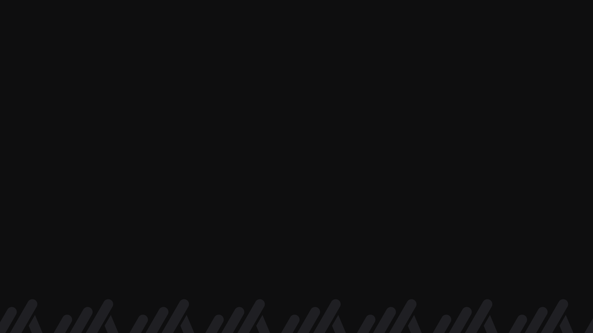
The rule: every letter is written as three bars in the mark's three heights, short, medium and tall, counting in threes (A is 001, Z is 222). A full stop is the lever. So a band of bars actually spells the tagline.
The hidden mark: E is letter 5, which comes out as short, medium, tall. That is the logo. Every E is picked out in Signal.
Posters, social covers, merch, office walls, and the band at the top of proposals and emails.
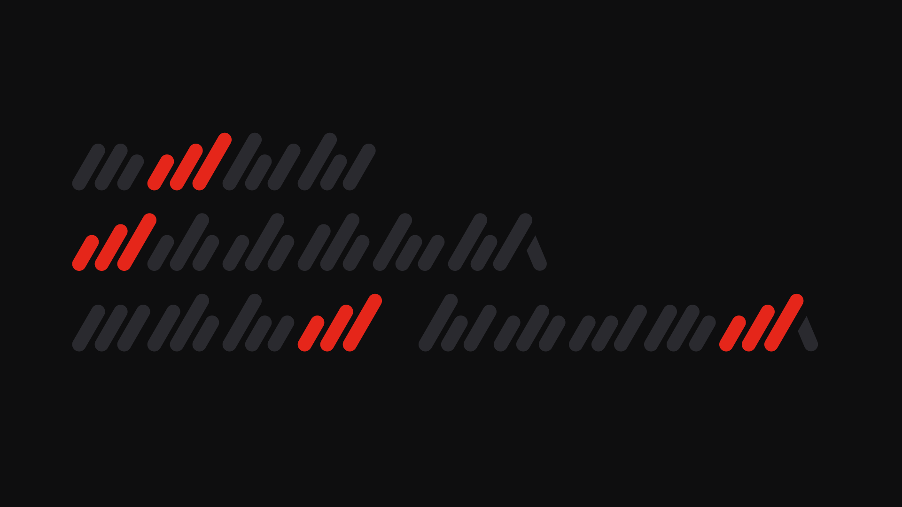
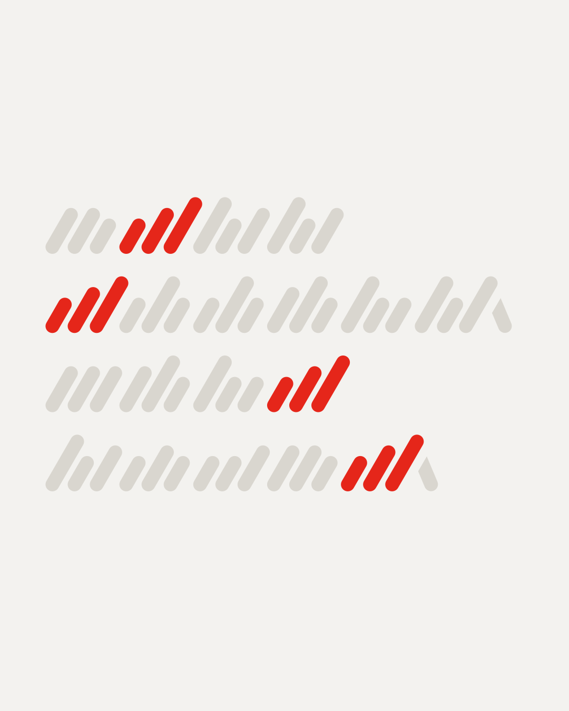
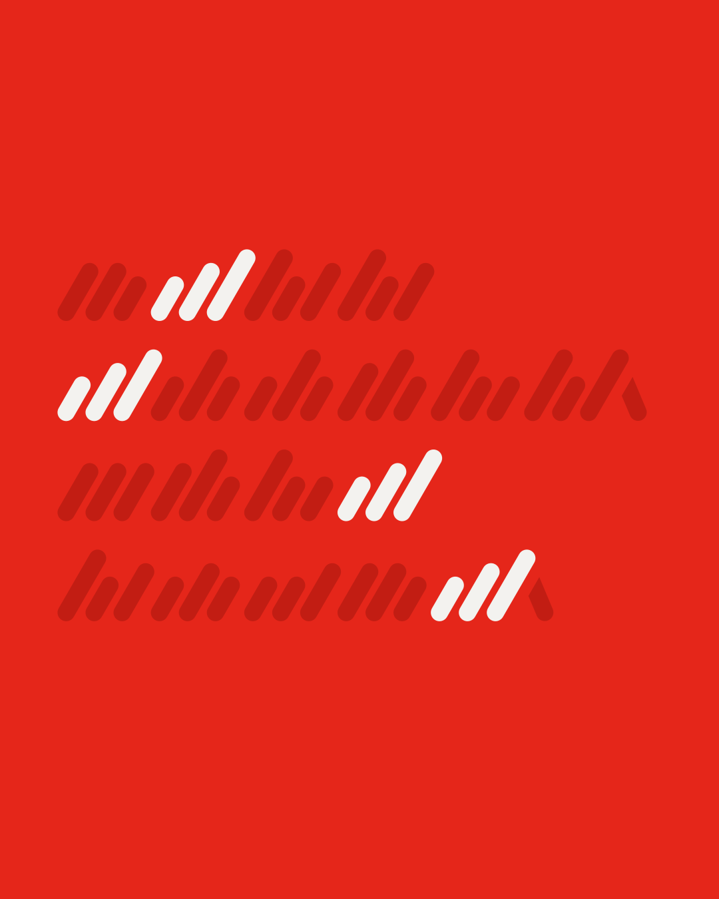
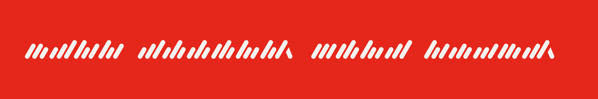
The rule: the mark cropped huge, bleeding off the bottom right, always with the lever in view. It carries a page on its own, with the message in the empty corner.
Covers, reel and story covers, event walls, the office. 16:9, 4:5 and 1:1.
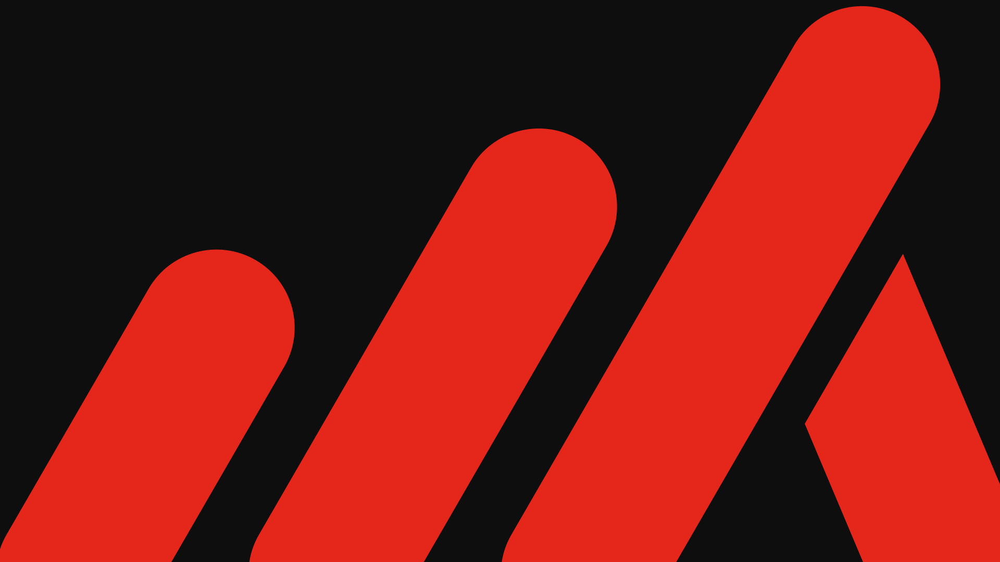
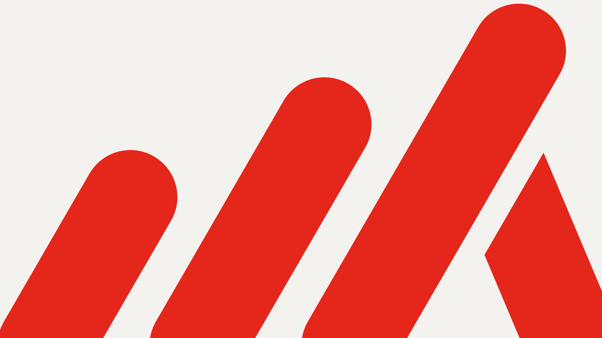
24px grid, 2px rounded stroke, matching the mark's round ends. Reporting uses the mark's own 60° bars, and Leverage is a beam on a fulcrum. They take the colour of the text around them.
Drawn at 24px. Use them at 16, 24, 32 or 48. At 16px the stroke thins to about 1.3px, so keep that size for dense lists. Don't thicken, fill or recolour parts of an icon.